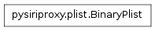
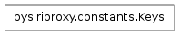

The plist module contains the Plist, and BinaryPlist classes.
These classes are designed to encapsulate a plist object, and be able to convert a standard plist into a binary formatted plist.

The BinaryPlist class takes in a dictionary containing data and provides the ability to convert the dictionary into a binary plist.
Note
This class uses the biplist module to convert a Python dictionary into a binary plist.
The DateKeys property contains the list of object keys that contain dates that need to be swapped with datetime objects.
The tag that indicates the start of a tts tag. This is a non-greedy regular expression so that it matches to only the first end curly brace.
The UnicodeKeys property contains a list of the object keys whose values are strings that may contain hexadecimal characters and need to be converted to unicode strings.

The Keys class defines various properties which contain strings which are keys to the dictionary objects sent between the iPhone and Apple’s server.
The aceId key.
The key for the AssistantId property of an object.
The birthday key for an object.
The class name for the object.
The key for the data property of an object.
The date key for an object.
The key for the dateSent property of an object.
The key for the displayText property of an object.
The due date key for an object.
The key for the firstName property of an object.
The key for the fullName property of an object.
The group for the object.
The key for the identifier property of an object.
The interpretations key for an object.
The key for the label property of an object.
The key for the lastName property of an object.
The key for the msgSender property of an object.
The key for the number property of an object.
The key for the orderedContext property of an object.
The key for the outgoing property of an object.
The key for the phones property of an object.
The phrases key for an object.
The properties key for the object.
The recognition key for an object.
The refId for the object.
The removeSpaceAfter key for an object.
The removeSpaceBefore key for an object.
The key for the selectionResponse property of an object.
The key for the SessionValidationData property of an object.
The key for the speakableSelectionResponse property of an object.
The speakable text key for an object.
The key for the SpeechId property of an object.
The street value.
The text key for an object.
The theatrical release date.
The title key for an object.
The tokens key for an object.
The utterance key for an object.
The version key for an object.